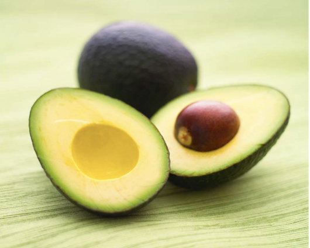

Avocados come from the avocado tree and are technically berries. They have one large pit. Avocados are both delicious and nutritious.
Avocados originated in south-central Mexico. The word avocado comes from aguacate in Spanish, which is based off of Nahuatl's āhuacatl.
Avocados have many nutrients and vitamins, and they are generally a very healthy food. These benefits include B vitamins, vitamin C, vitamin E, and potassium - in fact, avocados contain more potassium than bananas
. Avocados are known for their healthy fats and fiber.
| Nutrient | Amount in per 100g avocado |
|---|---|
| Fiber | 6.7 g |
| Monounsaturated Fat | 9.8 g |
| Protein | 2 g |
| Potassium | 485 mg |
Avocados are a perfect addition to many recipes! Some great recipes include:
Find some more recipes here:
Avocado Recipes on AllRecipes